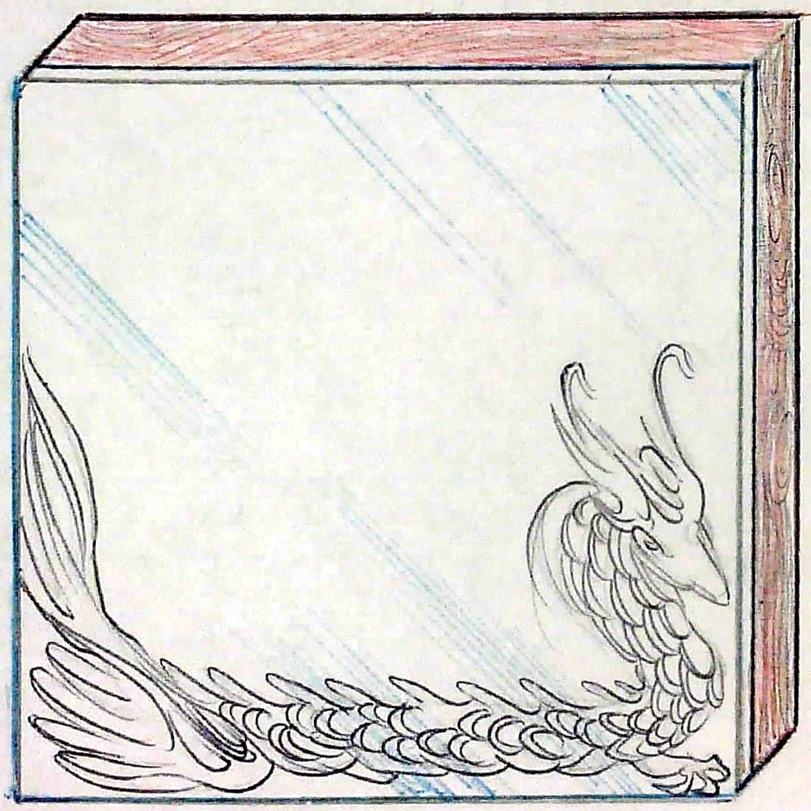
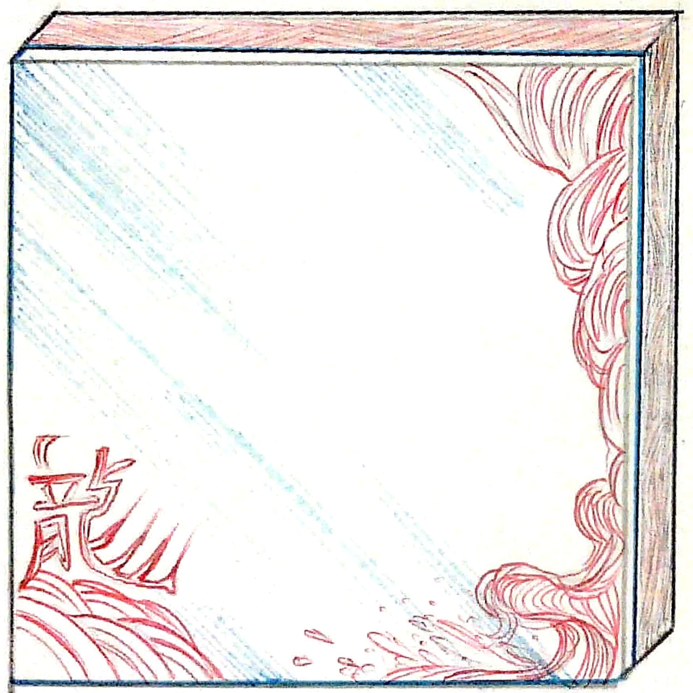
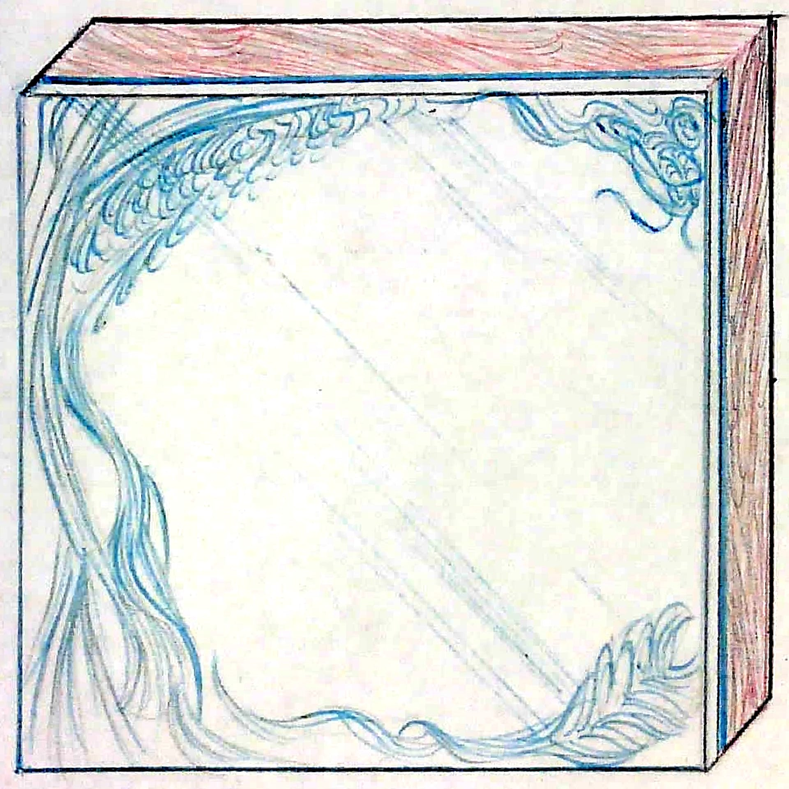
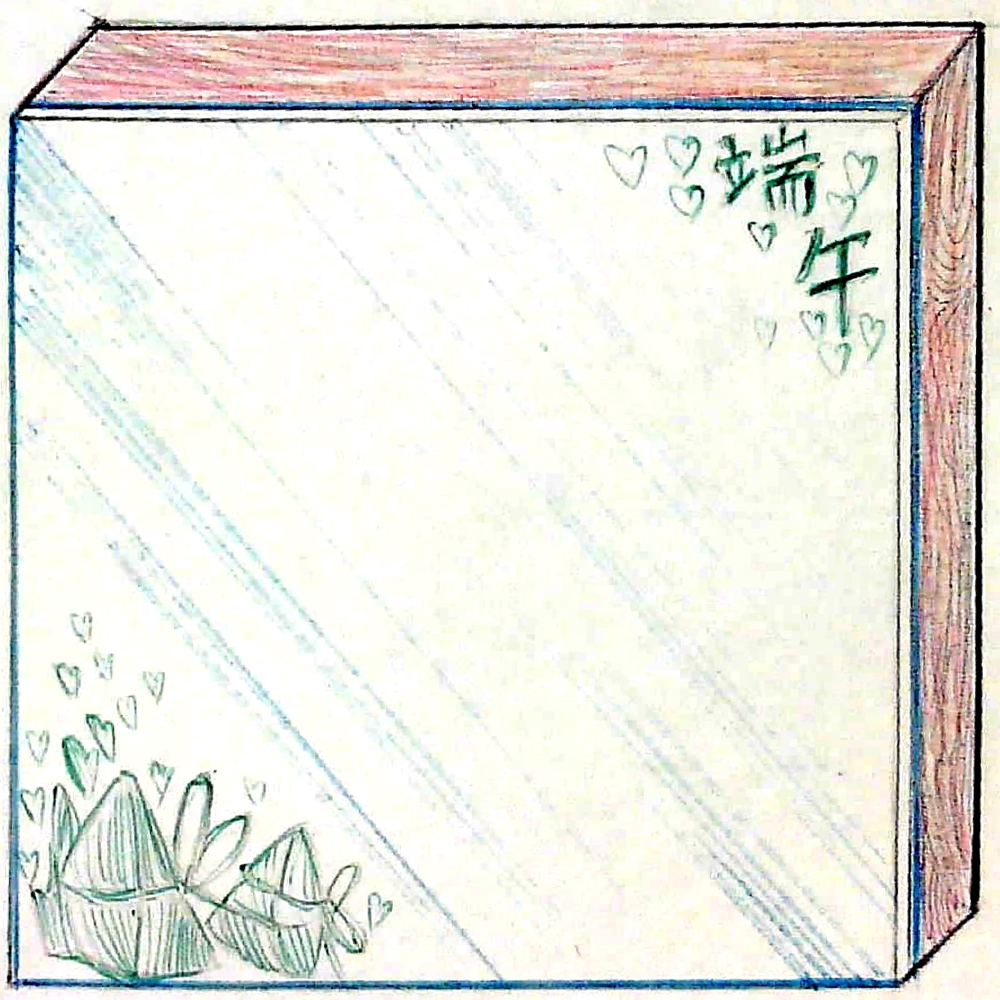

The Dragon Boat Festival is a significant Chinese cultural event celebrated to honor the ancient righteous poet Qu Yuan. It symbolizes truthfulness, bravery, and loyalty, with dragon boat races and zongzi (rice dumplings) being central to the festivities.

A majestic depiction of a dragon boat from the Dragon Boat Festival. The scales, tails, and horns are emphasized to create a powerful and regal visual, capturing the spirit of the festival.

An abstract interpretation of the Chinese character for 'dragon' transformed into a boat-like shape, riding dynamic waves. This design blends traditional calligraphy with modern artistic expression.

Wave patterns form the body of a dragon, with the creature soaring into the sky atop a massive wave. This design symbolizes strength and freedom, inspired by the festival's energy.

A festive design featuring the Chinese characters for 'Dragon Boat Festival,' adorned with hearts and zongzi (traditional rice dumplings). This highlights the festival's focus on family and togetherness.